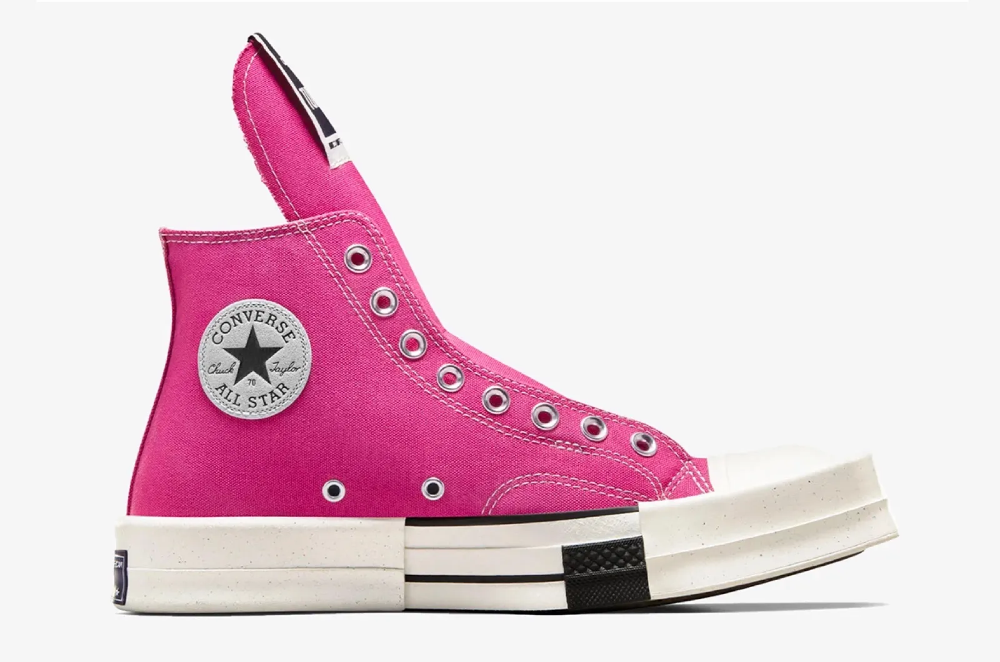

Nike Dunk Low ‘Cacao Wow’

If you feel like you've seen the Nike Dunk Low ‘Cacao Wow’ before, that's because you probably have. Back in 2007, the American sportswear company's skateboarding division dropped the Nike SB Dunk Low ‘Trail End.’ It sold out within seconds of releasing.
R 2500.00
Air Jordan 4 ‘Bred Reimagined’

We're not even a week into 2024, and sneaker die-hards are already crowning the Air Jordan 4 ‘Bred Reimagined’ as the sneaker of the year. Yes, it is only January. And yes, it's a pretty big statement to make – but it's one that potentially has substance given the magnitude of this release.
R 3000.00
Nike Air Max 1 ‘Malachite’

After months and months of nothing but shady leaks, the Nike Air Max 1 ‘Malachite’ has been officially revealed. Apparently inspired by the ‘Infrared' (those leaks again) which was the first Air Max 1 ever released, this colourway gives it a refresh that feels slightly cleaner and more muted.
R 2000.00
Levi's x New Balance 580 ‘Grey’

To think that denim jeans have only been around for 150 years is pretty wild really. Invented by Jacob W. Davis and Levi Strauss (of Levi's, obvs), the all-American staple has infiltrated almost every single wardrobe over the past century and a half.
R 2700.00
Nike Calm Mule ‘Tan’

Earlier this summer, Nike took the wraps off of the Calm Slide. While its design was ridiculously simple, that didn't stop every single colourway from selling out within minutes of dropping.
R 1500.00
Supreme x Nike Air Force 1 Low ‘Baroque Brown’

Supreme and Nike go way back. Since 2002, the NYC streetwear label and the Oregon-based sportswear company have been working together on some of the most hyped sneakers that the world has ever seen, and now, it looks like they'll be continuing this tradition with the brand new Supreme x Nike Air Force 1 Low ‘Baroque Brown'.
R 3000.00
Nike Air Force 1 Low ‘Valentine’s Day’

Valentine's Day: lame on Instagram, but cool for Nike. Because, each year, the sportswear company drops a collection inspired by all things soppy. And now, it's announced the Nike Air Force 1 Low ‘Valentine’s Day.
R 2900.00
Drkshdw x Converse Turbodrk Chuck 70 ‘Hot Pink’
Over the past 30 years, Rick Owens has forged an empire of darkness and really graily apocalpyse-wear. And yet the upcoming Drkshdw x Converse Turbodrk Chuck 70 is something of a big cultural reset. It's still left-field, and architectural, and abstract – three unarguable Owens qualities – but it's… kinda Barbiecore.
R 2000.00
Nike Cortez ‘Black White’

The sneakerverse is a strange place. While the fashion industry is always looking out for the next big thing, in the trainer world, the last big thing is usually what matters the most. Take the new Nike Cortez. Thanks to big, big collabs from the likes of Clot and Sacai, popularity surrounding the old school model is currently at an all-time high.
R 2300.00
Adidas Adilette 22

Adidas is no stranger to sliders and it's highly likely you've got a pair of its signature Three-Striped slip-ons stowed on your shoe rack. The Adilette 22,is a step-up from the traditional Adidas slider. Unlike the aforementioned black and white model, the new sliders take inspiration from the popular (and sold out) Kanye West-designed Yeezy Slides that have been seen on the feet of Kim Kardashian and Justin Bieber.